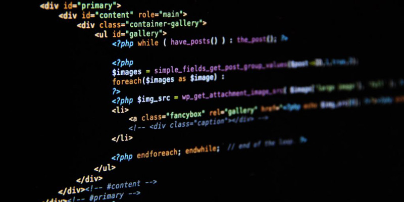

SADDAN BIMA NAGANTARA



BELAJAR PHP
Apa itu PHP? Pengenalan PHPPHP (PHP: Hypertext Prepocessor) adalah salah satu bahasa pemrograman web yang bersifat dinamis, dimana PHP adalah bahasa yang bisa disisipkan dengan sintaks HTML sehingga dapat menciptakan teknologi web dinamis seperti sekarang ini.
PHP merupakan sebuah bahasa server-side untuk pemrograman web yang pada awalnya merupakan program CGI yang di khususkan untuk menerima input melalui form yang di tampilkan browser. PHP dikatakan bahasa server-side embedded script language maksudnya adalah sintaks-sintaks dan perintah yang diberikan akan sepenuhnya dijalankan oleh server dan di kirim ke komputer client berupa bahasa html.
MATERI PDF PHP
© 2019 Bima Nagantara